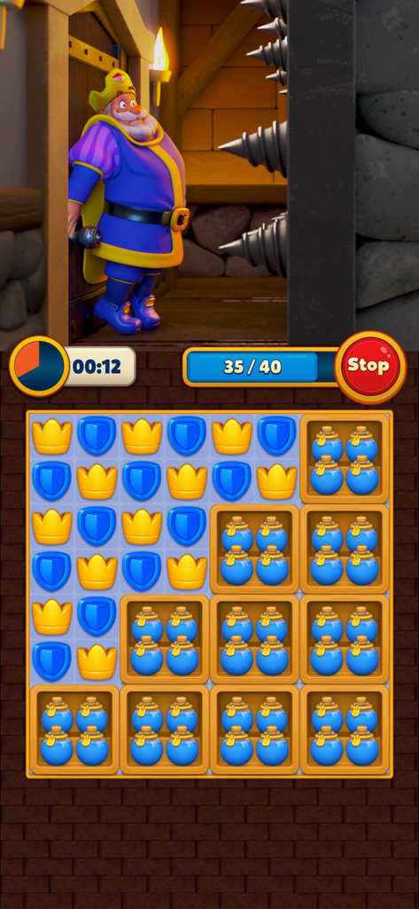
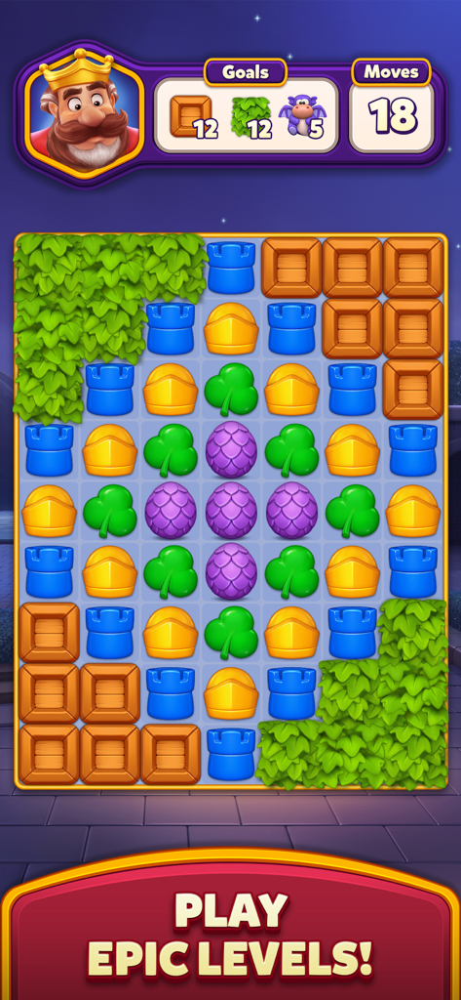
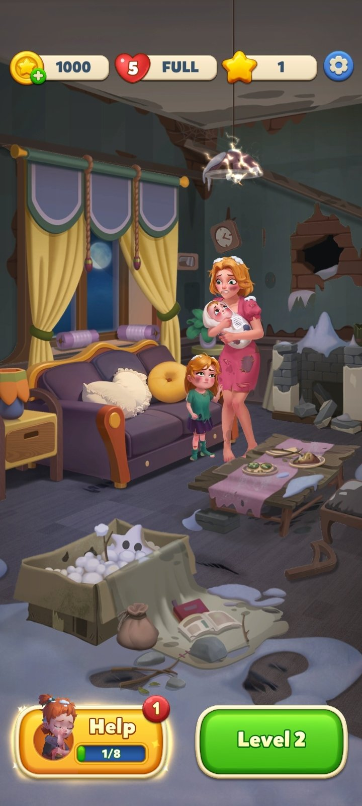
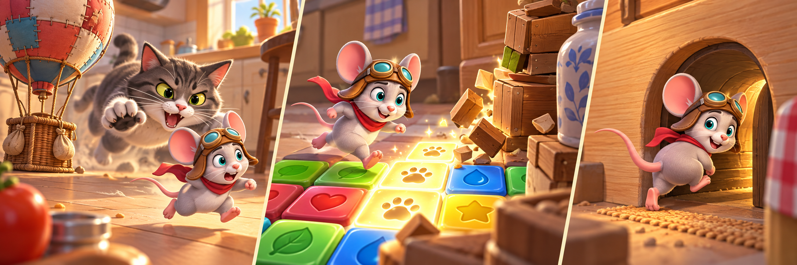
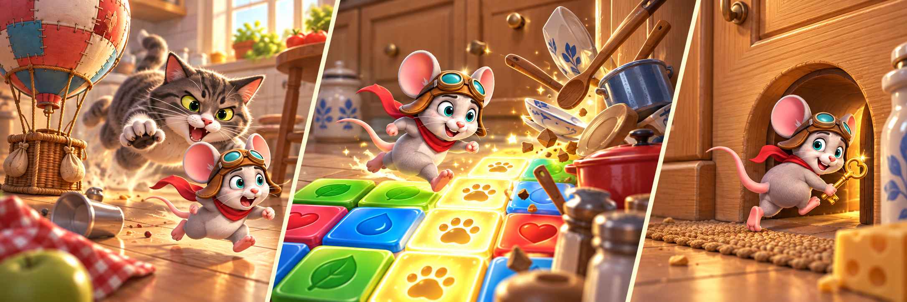
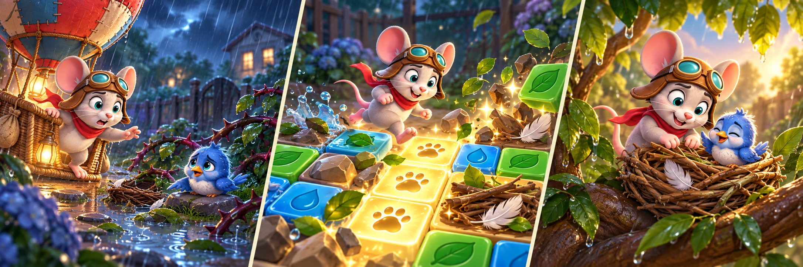
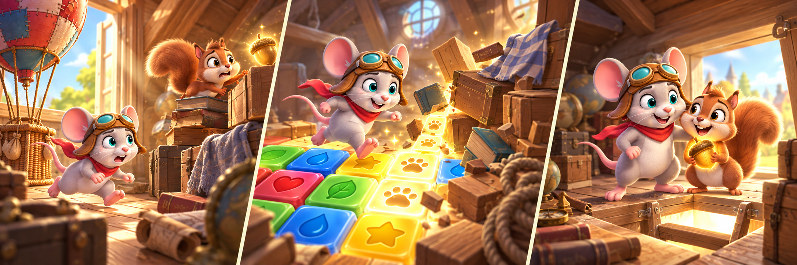
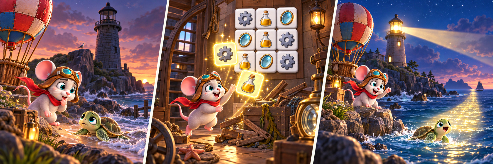
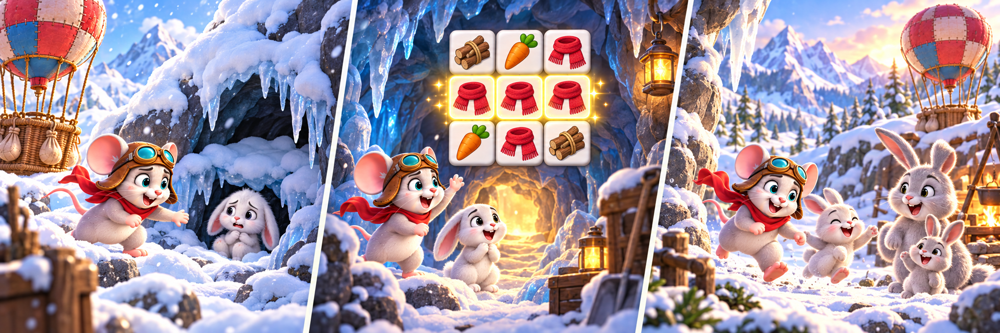
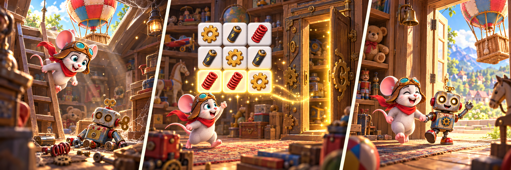

TILESCAPE · 买量承接设计草案小小飞行家遇险：
小小飞行家遇险：
让 Tile 三消真正解锁逃生路径
主角是一只驾驶热气球四处探险的小老鼠。这次意外降落在猫的领地，玩家玩 Tile 点亮路线、穿过厨房，帮助它逃回安全地道。
角色前提：喜欢冒险的小老鼠带着热气球旅行；“猫追赶”是其中一次可完整体验的偶发事件。本页定位：产品设计提案，尚未核对 TS 当前首屏、关卡与活动的实现边界。
竞品参考
本地保存的公开截图，打开页面即可查看


TS 的设计主张
不额外复制一套“假玩法”。每完成一组关键 Tile，就移开一处杂物、点亮一格脚印；玩家看到的逃跑路线会随核心操作真实变化。
一条完整承接链
从广告末帧到长期活动，角色、危机与目标保持一致
出口被柜门、箱子与杂物挡住；点 Tile 后路线逐段亮起。
猫扑来，小老鼠跑到厨房柜前；目标：清出逃跑路线。
完成关键组合，移开杂物并点亮 3 格脚印，钻入柜缝。
开柜门 → 穿厨房 → 躲纸箱 → 修鼠洞；每 2–3 关推进一次。
脚印、钥匙、木屑对应路线、柜门和鼠洞修复。
花园躲猫、阁楼找食物；只换任务和场景，Tile 主线不变。

两种承接方案
小游戏归入特殊任务系统，作为完成 N 关后的阶段性活动
拓展剧情示例
以热气球旅行为主线，复用「发现事件 → Tile 清障 → 节点行动 → 结交朋友」的承接结构

猫的厨房：紧急逃脱
热气球意外降落在猫的厨房；消除杂物、点亮脚印，穿过柜缝与鼠洞，逃回安全地道。

雨夜花园：解救小鸟
暴雨吹落鸟巢；清出积水、荆棘与落叶，收集筑巢材料，帮助小鸟回到安全的新巢。

阁楼寻宝：寻找小松鼠
小松鼠为追逐发光橡果被困旧阁楼；整理箱子与旧书搭出通路，找到它并结交新的旅行伙伴。

海边灯塔：引导小海龟回家
发现熄灭灯塔与迷路小海龟；收集齿轮、灯油和镜片修好灯塔，用灯光为它照出回海的安全路线。

雪山洞穴：寻找小兔子
热气球降落雪山，发现走失小兔子；清出洞口积雪，收集保暖物资，带它沿暖光路线与家人重逢。

废弃玩具店：结交机械伙伴
在废弃玩具店发现失灵机器人；收集齿轮、电池和弹簧唤醒它，一起打开机关门，继续下一段冒险。